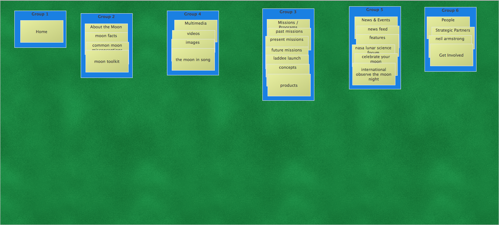
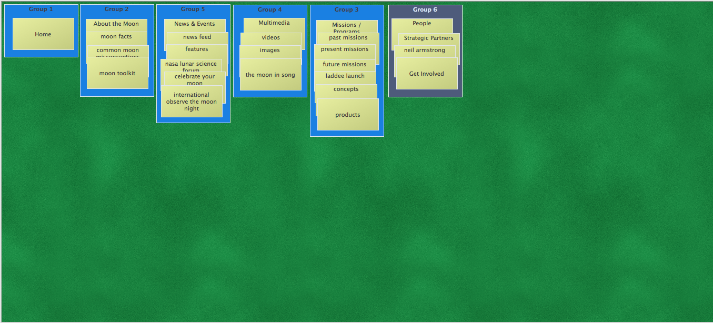
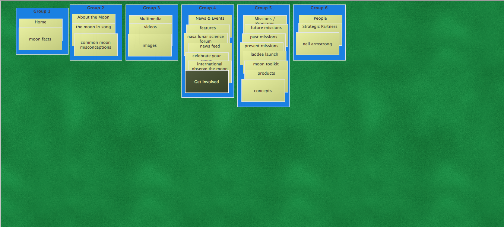
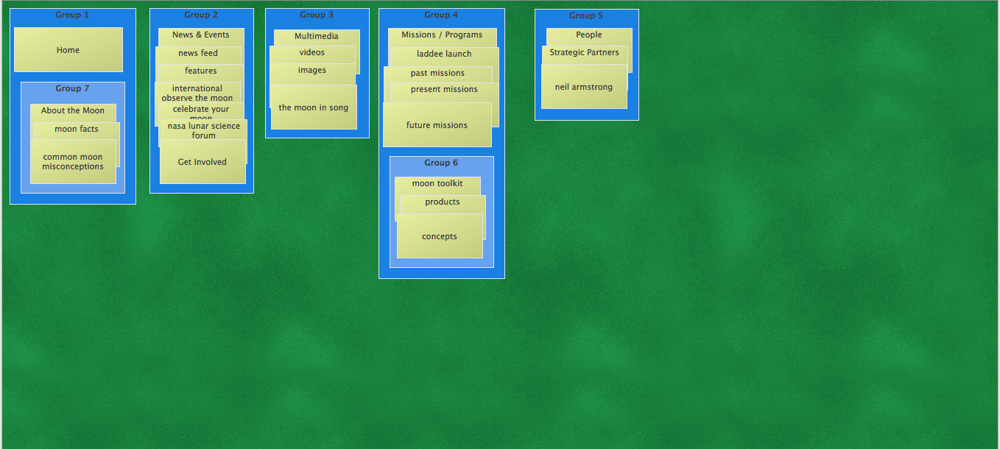

The three people I had do the card sort had mostly the same similar six categories: Home, About the Moon, Multimedia, Missions/Programs, News & Events, and People. These are for the most part the same as what Nasa's website had as well. Most of the groupings make sense about what the content cards said, with some cards moving around different categories. A few of the people had placed a lot of content in a couple groupings, while another had a more even distribution.
The sorts averaged about 5 minutes each and the participants seemed to take their time and to think things over logically rather than doing it for speed.
  I had done the sort a few times and this was my final sort. I tried to condense the content as best as I could to simplify some things. The Home page will also include the About page instead of it being by itself. I found that I did similar sorts as Nasa and as the other people sorting which might be because I had previously looked at the website and knew how they had things organized.
My sort was similar to the current site with more combined groupings. The current site was very detailed in what content was displayed and I tried to create a site that would be more broad, but would allow for people to easily find what they were looking for.
